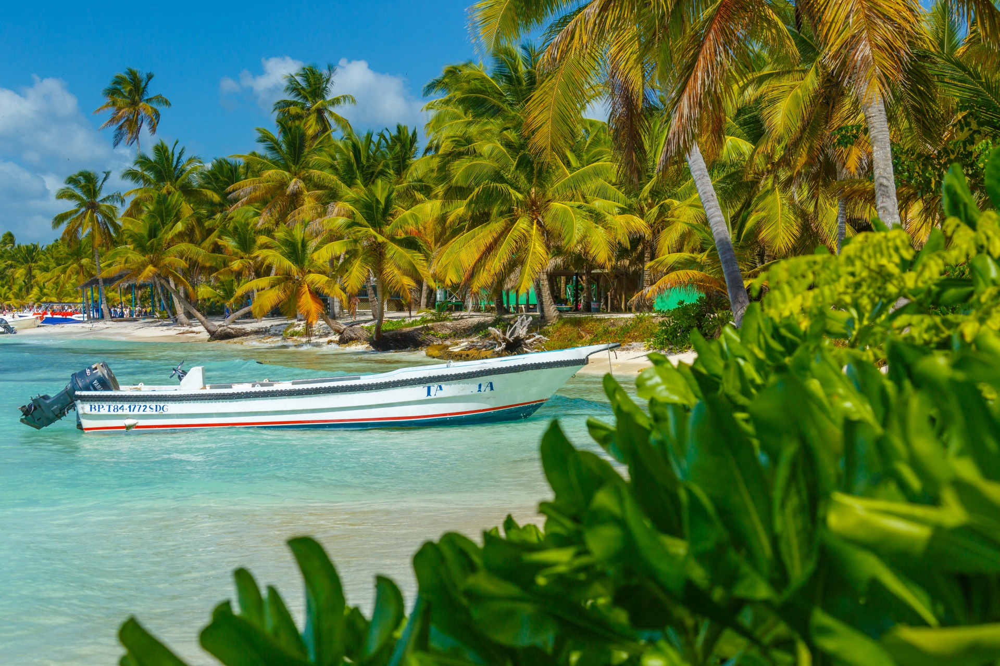
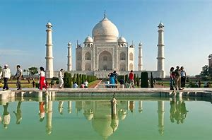
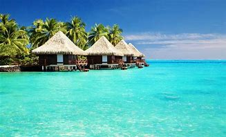
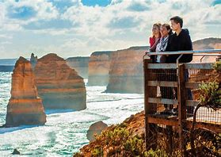
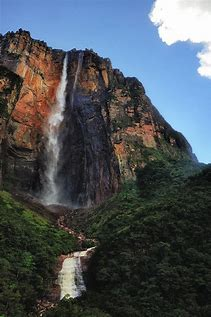

Laissez-nous vous emmener vers les meilleures destinations du monde!
Nous avons organisé une sélection unique de destinations mondiales pour enrichir votre vie, à travers des lieux et des expériences adaptés aux voyageurs comme vous, qui aiment la géographie, la culture ainsi que les activités de plein air. Nous sommes ravis que vous soyez notre invité!

Australie
Des zodiacs vous emmènent sur la spectaculaire rivière King George, où vous vous sentirez
éclipsé
par les imposantes parois du canyon de roche rouge, puis rafraîchi par la brume des chutes King
George.
Visitez une galerie d'art aborigène en plein air, représentant des images des esprits Wandji.
Explorez la rivière Ord, l'un des systèmes fluviaux les plus spectaculaires d'Australie.
Visitez Montgomery Reef, où la marée baisse si rapidement que les eaux emprisonnées au sommet du
récif créent un torrent déchaîné lorsqu'elles s'échappent.
| Nom du Paquet | Duréé | Prix p/p CAD |
|---|---|---|
| Magie Australie | 3j + 2n | 1,660 |
| Grande visite | 4j + 3n | 1,8j0 |
| Récif de corail | 5j + 4n | 2.100 |
| Terre de kangourou | 6j + 5n | 2,320 |
| Sidney | 7j + 6n | 1,540 |
Indonésie
Celui qui a inventé l'expression «paradis tropical» devait avoir à l'esprit Bali, en Indonésie.
Profitez des cérémonies de bienvenue dans des villages isolés et plongez pour explorer les
sous-marins animés.
| Nom du Paquet | Duréé | Prix p/p CAD |
|---|---|---|
| Nasa Dua | 3j + 2n | 1,600 |
| Visite des temples | 3j + 2n | 1,850 |
| Nusa Penida | 5j + 4n | 2,100 |
| Ubud | 6j + 5n | 2,250 |
| Lombok | 7j + 6n | 2,650 |

Canada
Les majestueuses Rocheuses canadiennes s'étendent sur près de 69 500 milles carrés dans deux
provinces.
Le long de cette grande étendue se trouvent des villes alpines tranquilles et des paysages à
couper le souffle.
Combiné à un hébergement privé de première classe à bord du Canadien de VIA Rail, il constitue
l'escapade
romantique parfaite. Une fois à Jasper, vous aurez le temps d'explorer la belle ville avant de
faire une excursion
d'une journée au champ de glace Columbia en route vers le lac Louise. Au milieu de paysages de
montagnes
majestueuses en cascade, vous passerez la nuit à Lake Louise avant de continuer vers votre
prochaine destination,
Banff, qui abrite des sources chaudes et le spectaculaire parc national de Banff.
| Nom du Paquet | Duréé | Prix p/p CAD |
|---|---|---|
| Escapade en montagne | 3j + 2n | 660 |
| Détendez-vous dans les Rocheuses | 4d + 3n | 1,100 |
| Aventures canadiennes | 5j + 4n | 1,320 |
| Les Grands lacs | 6j + 5n | 1,320 |
| Rocheuses De Luxe | 7j + 6n | 1,540 |

Caraïbes
Les Caraïbes sont une joyeuse mosaïque d'îles qui invitent les chasseurs de paradis, une
explosion
de couleurs, bordées de plages et imbibées de rhum. C'est une profusion vivante et enivrante
de
personnes et de lieux répartis sur 7000 îles (moins de 10% sont habitées). Mais, malgré tout
ce
qu'ils partagent, il y a aussi beaucoup de choses qui les rendent différents.
| Nom du Paquet | Duréé | Prix p/p CAD |
|---|---|---|
| Perle des Caraïbes | 3j + 2n | 1,000 |
| Découverte | 4d + 3n | 1,150 |
| Les iles vierges | 5j + 4n | 1,450 |
| Grenadines | 6j + 5n | 1,750 |
| Aruba | 7j + 6n | 1,950 |

EAU Dubai
Dubaï est célèbre pour ses horizons scintillants, mais regardez au-delà et vous serez
récompensé
par une alchimie émouvante d' héritage et de culture , comme nulle part ailleurs dans le
monde. Dubai
is famous for its glittering skylines but look beyond and you will be rewarded with a
stirring
alchemy of heritage and culture. unlike anywhere else in the world.
| Nom du Paquet | Duréé | Prix p/p CAD |
|---|---|---|
| Burj Al-Arab | 3j + 2n | 2,785 |
| Plage de Jumeirah | 4d + 3n | 3,714 |
| Immeubles de grande hauteur | 5j + 4n | 4,642 |
| Expérience de desserts | 6j + 5n | 5,571 |
| Abu-Dhabi | 7j + 6n | 6,500 |

Grèce
La Grèce est pour beaucoup trop synonyme de « soleil, îles, mer ». N'ignorez pas les
archipels
ensoleillés et les 15 000 km de côtes mais découvrez sa panoplie d'autres points forts. Des
montagnes
glorieuses mélangent des sommets austères avec des prairies alpines luxuriantes et des bois
- ainsi
que des champs de neige éblouissants en hiver. Il y a des rivières et des gorges
spectaculaires, ainsi
que des sentiers de randonnée tranquilles aussi faciles ou difficiles que vous le souhaitez.
Partout vous
trouverez une flore et une faune richement diversifiées.
| Nom du Paquet | Duréé | Prix p/p CAD |
|---|---|---|
| Îles Saloniques | 3j + 2n | 1,800 |
| Mer Égée | 4j + 3n | 2,400 |
| Mer Ionienne | 5j + 4n | 3,000 |
| Crète | 6j + 5n | 3,600 |
| Zakhyntos | 7j + 6n | 4,200 |

Islande
L'Islande est souvent appelée le pays de la glace et du feu , une terre où les volcans
et la chaleur
géothermique ont marqué le paysage, ainsi que les nombreux glaciers et lagunes
glaciaires, une terre
à la nature vierge et préservée. L'Islande, l'île isolée au milieu de l'Atlantique Nord,
est devenue
un endroit populaire pour les films à succès d'Hollywood.
| Nom du Paquet | Duréé | Prix p/p CAD |
|---|---|---|
| Lagon Bleu | 3j + 2n | 2,200 |
| Reykjavik | 4j + 3n | 4,400 |
| Reykjanes | 5j + 4n | 5,500 |
| Husafell Region | 6j + 5n | 6,600 |
| South Iceland | 7j + 6n | 7,700 |

Inde
Aussi belle qu'époustouflante, l'Inde est un pays infiniment fascinant qui
défis et
surprend même le voyageur le plus aguerri. S'étendant entre les plages dorées de la
Indien
Océan et sommets enneigés de l'Himalaya, l'Inde éblouit d'un incroyable
tapisserie de
merveilles naturelles et artificielles.
| Nom du Paquet | Duréé | Prix p/p CAD |
|---|---|---|
| Jaipur | 3j + 2n | 1,500 |
| Goa | 4j + 3n | 1,800 |
| Delhi/Mumbai | 5j + 4n | 2,100 |
| Taj Mahal | 6j + 5n | 2,500 |
| Qutb Minar | 7j + 6n | 3,400 |
Seychelles
Croisière Les eaux turquoises d'un paradis lointain aux Seychelles . Préparez-vous pour
des vacances
inoubliables . Cent quinze îles de corail et de granit s'élevant de l'océan Indien
composent les Seychelles,
un refuge immaculé de plages de sable blanc, de majestueuses falaises de granit, de
jungles bordées
de palmiers et d'étonnantes eaux azur.
| Nom du Paquet | Duréé | Prix p/p CAD |
|---|---|---|
| Anse Latium | 3j + 2n | 4,500 |
| Île Moyenne | 4j +3n | 6,000 |
| Île de Mahé | 5j +4n | 7,500 |
| Parcs & Jardins | 6j+ 5n | 9,000 |
| St Anne | 7j + 6n | 10,500 |

Italie
L'Italie comprend certains des paysages les plus variés et les plus pittoresques de
la planète et
est souvent décrite comme un pays en forme de botte . À son large sommet se dressent
les Alpes, qui
comptent parmi les montagnes les plus accidentées du monde. Les points culminants de
l'Italie se
trouvent le long du Mont Rose, qui culmine en Suisse, et le long du Mont Blanc, qui
culmine en France.
| Nom du Paquet | Duréé | Prix p/p CAD |
|---|---|---|
| Toscane | 3j + 2n | 1,500 |
| Ombrie | 4j + 3n | 2,000 |
| Pouilles | 5j + 4n | 2,500 |
| Cinque Terre | 6j + 5n | 3,000 |
| Capri/Côte Amalfitaine | 7j + 6n | 3,500 |

Japon
Une destination louée et adorée par d'innombrables voyageurs ; Le Japon continue
d'attirer et de
ravir les visiteurs avec des paysages inégalés, des expériences traditionnelles et
de délicieuses
cuisines. Pour ceux qui veulent expérimenter les joies et les merveilles, continuez
à
| Nom du Paquet | Duréé | Prix p/p CAD |
|---|---|---|
| Tokyo | 3j + 2n | 2,400 |
| Kyoto | 4j + 3n | 3,200 |
| Hiroshima | 5j + 4n | 4,000 |
| Okinawa | 6j + 5n | 4,800 |
| Osaka | 7d + 6n | 5,600 |

Jordanie
La Jordanie est l'un des endroits les plus intéressants à visiter au Moyen-Orient.
Un pays compact
avec une histoire riche qui offre beaucoup de choses à voir et à faire, et toujours
considéré par
beaucoup comme un havre de paix dans une région quelque peu problématique. Petra est
un symbole du
pays et l'endroit que tout le monde veut visiter.
| Nom du Paquet | Duréé | Prix p/p CAD |
|---|---|---|
| Pétra | 3d + 2n | 1,500 |
| La mer Morte | 4j + 3n | 1,800 |
| Jerash | 5j + 4n | 2,200 |
| Amman | 6j + 5n | 2,500 |
| Umm Qais | 7j + 6n | 2,800 |

Maldives
Les Maldives sont une nation d'îles de l'océan Indien, qui s'étend sur
l'équateur. Le pays est
composé de 1192 îles qui s'étendent sur une longueur de 871 kilomètres. Alors
que le pays couvre
une superficie d'environ 90 000 kilomètres carrés, seuls 298 kilomètres carrés
sont des terres arides.
Les îles sont regroupées en une double chaîne de 26 atolls.
| Nom du Paquet | Duréé | Prix p/p CAD |
|---|---|---|
| Male | 3j + 2n | 1,500 |
| Vaavu Atoll | 4j +3n | 1,800 |
| Maafushi | 5j+4n | 2,200 |
| Hulhumale | 6j + 5n | 2,500 |
| Dhiffushi | 7j + 6n | 2,800 |

Népal
Le Népal Himalaya est le but ultime pour les amoureux de la montagne. Certaines
des randonnées les
plus emblématiques et les plus accessibles de l'Himalaya sont proposées ici,
avec des sentiers
accidentés vers l'Everest, les Annapurnas et au-delà. Nulle part ailleurs vous
ne pouvez marcher
pendant des jours dans des paysages de montagne incroyables, en sachant qu'un
repas chaud, confortable
lodge et part de tarte aux pommes chaude vous attendent en fin de journée.
| Nom du Paquet | Duréé | Prix p/p CAD |
|---|---|---|
| Pagode de la paix mondiale | 3j + 2n | 1,800 |
| Stupa de Swayambhunath | 4j + 3n | 2,400 |
| Temple Maya Devi | 5j + 4n | 3,200 |
| de Khatmandou | 6j + 5n | 3,700 |
| Bhaktapur | 7j + 6n | 4,200 |

Polynésiens
Située dans la région orientale de l'Océanie, la Polynésie est un groupe de plus
de 1 000 îles
réparties dans le centre et le sud de l'océan Pacifique. Le triangle polynésien
formé en reliant
trois points majeurs de la région, dont Hawaï, la Nouvelle-Zélande et l'île de
Pâques, abrite de
nombreuses autres îles majeures telles que Samoa, Tonga, les îles Cook, Wallis,
Kiribati, Tuvalu,
la Polynésie française et bien d'autres, présentant la culture, les croyances et
les pratiques
polynésiennes. Explorez les splendeurs de Mère Nature dans la région avec de
nombreuses autres expéditions ici.
| Nom du Paquet | Duréé | Prix p/p CAD |
|---|---|---|
| Apataki | 3j + 2n | 2,900 |
| Atiu | 4j + 3n | 3,800 |
| BoraBora | 5j + 4n | 4,500 |
| Mo’orea | 6j + 5n | 5,100 |
| Les Tuamotus | 7j + 6n | 6,500 |

Le Portugal
Découvrez le Portugal . Accrochez-vous bien pendant que le tram 28 vous emmène
jusqu'au Castelo
de Sao Jorge de Lisbonne. Remontez dans l'histoire en entrant dans la citadelle
du XIIIe siècle
étonnamment bien conservée de Bragance. Savourez le meilleur port du monde au
milieu des vignobles
en terrasses du petit Pinhao. Sentez l'adrénaline alors que vous vous mettez
debout sur une
planche de surf à la plage de Baleal.
| Nom du Paquet | Duréé | Prix p/p CAD |
|---|---|---|
| Lisbonne | 3j + 2n | 1,300 |
| Porto | 4j + 3n | 1,700 |
| Sintra | 5j + 4n | 2,200 |
| Cohimbra | 6j + 5n | 2,598 |
| Faro/Funchal | 7j + 6n | 3,200 |

Amérique du Sud
Angel Falls est une chute d'eau au Venezuela. C'est la plus haute cascade
ininterrompue du monde,
avec une hauteur de 979 mètres et un plongeon de 807 m. La cascade tombe au
bord de la montagne
Auyán -tepui dans le parc national de Canaima , un site du patrimoine
mondial de l'UNESCO dans la
région de Gran Sabana de l'État de Bolívar. La hauteur, 979 m, comprend
principalement la chute
principale, mais comprend également environ 400 mètres de cascade en pente
et de rapides sous la
chute et une chute de 30 mètres de haut en aval des rapides de talus.
| Nom du Paquet | Duréé | Prix p/p CAD |
|---|---|---|
| Chutes Angel | 3j + 2n | 1,700 |
| Canaïma | 4j + 3n | 2,700 |
| Cascades El Sapo | 5j + 4n | 2,598 |
| Paseo Orénoque | 6j + 5n | 2,598 |
| Puerto Ordaz | 7j + 6n | 3,200 |

Thailand
Il y a quelque chose de vraiment spécial dans le sud de la Thaïlande et il
vaut mieux le vivre à
l'aventure. Arrêtez-vous sur le chemin de Phuket et visitez les îles du Sud
(Koh Samui, îles Phi Phi,
Ko Tao) pour un voyage dont vous vous souviendrez toujours.
| Nom du Paquet | Duréé | Prix p/p CAD |
|---|---|---|
| Bangkok | 3j + 2n | 1,300 |
| Chiang Mai | 4j + 3n | 1,733 |
| Phuket | 5j + 4n | 2,165 |
| Trang | 6j + 5n | 2,598 |
| Plage de Railay | 7j + 6n | 3,031 |